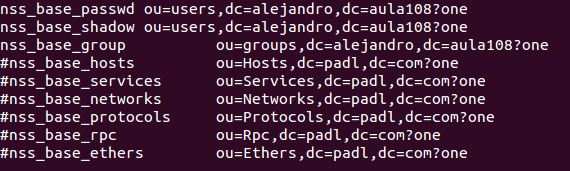
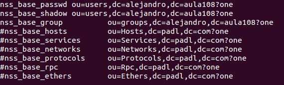
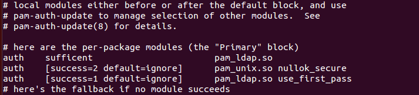

- Módulo: Administración de Sistemas Operativos
- Título del trabajo
- Componentes del grupo: Alejandro Garcia Yumar
- Curso Académico: 2013/2014
- Fecha de entrega: 31 de Octubre de 2014
El ejercicio consiste en instalar correctamente los programas de ldap
Se iran mostrando las distintas capturas del proceso ha seguir.
Para empezar debemos poner en los repositorios los siguientes datos.
Para empezar debemos poner en los repositorios los siguientes datos.
Ahora ejecutamos el comando apt-get install para instalarlo.

Para terminar la instalación rellenamos los huecos de las siguientes imagenes con los datos para nuestro ldap preferentemente siguiendo las imagenes.

 


Ahora consiste en instalar el programa phpldapadmin para poder modificar nuestro ldap. Esto lo conseguimos con el comando apt-get install
Despues de estar instalado podemos crear un usuario en esta ventana
Los grupos creados

El menu en que se puede crear los grupos y usuarios
Uso de jxplorer desde otro ordenador en que se muestra la base de datos anterior.